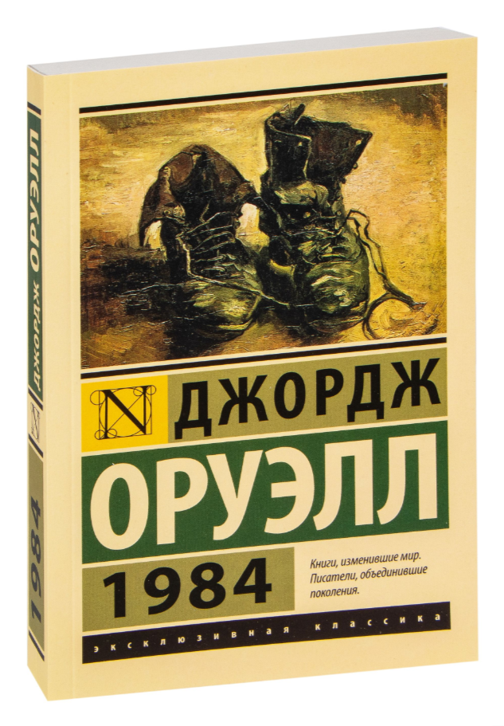

Новинки!
Название романа автор получил перестановкой последних цифр года написания. В 1948 появилось произведение “1984” ( издано в 1949 г.).
Тематически, роман посвящён последствиям тоталитаризма, массового наблюдения и промывания мозгов людей в тоталитарном обществе. Оруэлл, демократический социалист, создал тоталитарное государство в романе по образцу сталинского СССР и нацистской Германии.
Антиутопический сатирический роман английского писателя Олдоса Хаксли, опубликованный в 1932 году. Роман был ответом на «Современную утопию» и «Люди как боги» Герберта Уэллса, автор в основном отталкивался от работы Бертрана Рассела «Научное мировоззрение» (1931), предостерегавшей от возможного в будущем захвата власти кучкой интеллектуалов-технократов.
Роман Энтони Бёрджесса, написанный в 1962 году. Роман лёг в основу одноимённого фильма, снятого в 1971 году Стэнли Кубриком. Бёрджесс написал свой роман после того, как врачи диагностировали у него опухоль мозга и заявили, что жить ему осталось около года. Название «Заводной апельсин» (англ. A Clockwork Orange) роман получил от выражения, которое когда-то было в ходу среди лондонских кокни — обитателей рабочих кварталов Ист-Энда. Кокни старшего поколения о вещах необычных или странных говорят, что они «кривые, как заводной апельсин», то есть это вещи самого что ни на есть причудливого и непонятного толка. Энтони Бёрджесс семь лет прожил в Малайзии, а на малайском языке слово «orang» значит «человек», а на английском «orange» — «апельсин»